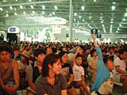
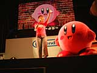
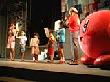
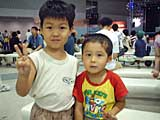

アニメ『星のカービィ』
10月6日から、ＣＢＣ/ＴＢＳ系列にて放送スタート！（毎週土曜日あさ７：３０〜） |
 可愛い可愛いカービィが、ついにＴＶアニメ化！ それを記念して、会場では主人公のカービィと、主題歌を歌うシャンチーさんをお招きしてのスペシャルステージが開催され、特設ステージいっぱいに集まったお友達の声援と拍手の中、お絵描き歌やスペシャルアニメが公開されていました。
|
 シャンチーさんの歌声で幕を開けたステージには、まん丸いカービィがピョコピョコ動いていて、後ろのスクリーンにはカービィのアニメが流れています。主題歌はほのぼのしたものかと思いきや、かなりカッコイイ歌詞とメロディーになっていました。アニメの中のカービィは、どうやら最強の戦士として活躍するらしいですよ。
|
主題歌のあとは、司会のお姉さんからアニメ化の報告。1992年の初登場以来、全世界で実に13タイトルものゲームに登場しているカービィですから、彼のイメージにぴったりのポニョポニョ感を出すために、アニメでは特殊な技術を使っているそうですよ。
|
 アニメ化報告の次はカービィのお絵描き歌です。会場からステージに上がってくれた4人のお友達が、シャンチーさんのお絵描き歌に合せてカービィを描いてくれました。みんな上手に描けてましね。ステージから降りるときには、記念のカービィトランプをもらって、みんなとっても嬉しそう。
|
スペシャルステージの最後には、ＴＶでは放映されない予告編のスペシャルアニメを大公開！ スクリーンに映るカービィの勇姿を見ていると、アニメの放映が本当に待ち遠しくなっちゃいました。このスペシャルアニメは明日も公開されるので、カービィ好きのお友達は、ぜひ見に来てくださいね。
|
 カービィが大好きという小川 優斗くん(４才、右側)と武藤 敬汰くん(４才、左側)。とっても人なつっこい2人はご近所さん同士。今日はお母さんと一緒に遊びに来てくれました。ゲームボーイやニンテンドウ64で、カービィを遊んでくれてるそうです。アニメも楽しみにしててね。
|